What this is
An AI assistant built in Copilot Studio that handles employee IT questions, plus a Power Automate workflow that routes access requests for approval. Employees chat with the assistant to ask policy questions or request access to a system. The assistant answers from a set of policy documents, and for access requests, it collects the required details and creates a request that goes through an approval workflow in SharePoint and Outlook.
Built and tested in an isolated Microsoft 365 tenant with fictional data.
The problem
IT access requests usually come in as Teams messages, emails, or verbal asks. That means missing information, no audit trail, and IT staff following up for details that should have been included from the start. Requests for more access than needed are also common.
Approach
Copilot Studio handles the parts of the conversation that vary — understanding the request, answering policy questions. Power Automate handles everything that has to be consistent every time — approval routing, logging, notifications. The AI never decides whether access is granted; that's always a human approval step.
| Where | Handled by |
|---|---|
| Understanding the request, answering policy questions | Copilot Studio |
| Approval routing, status updates, notifications | Power Automate (deterministic) |
| Whether access is actually granted | A human approver, always |
How it works
Each request is stored as an item in a SharePoint list (IT Requests) with the requester, system, justification, priority, approver, and status.
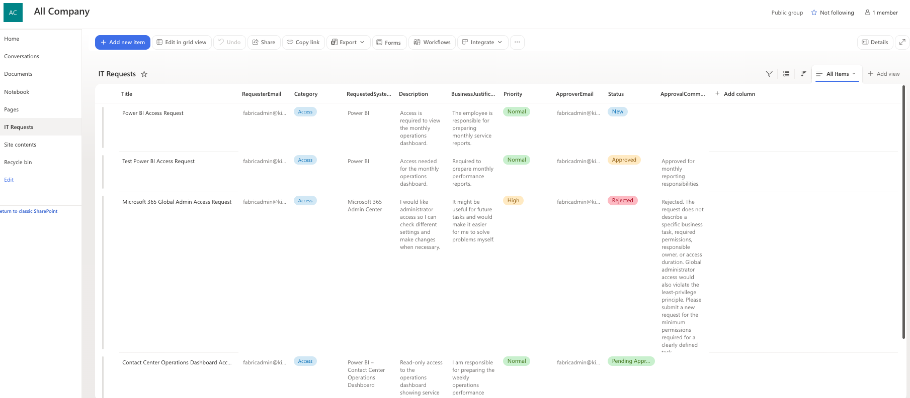
IT Requests list in SharePoint.
Creating an item triggers a Power Automate flow: it sets the status to Pending Approval, emails the approver, and branches based on their decision.
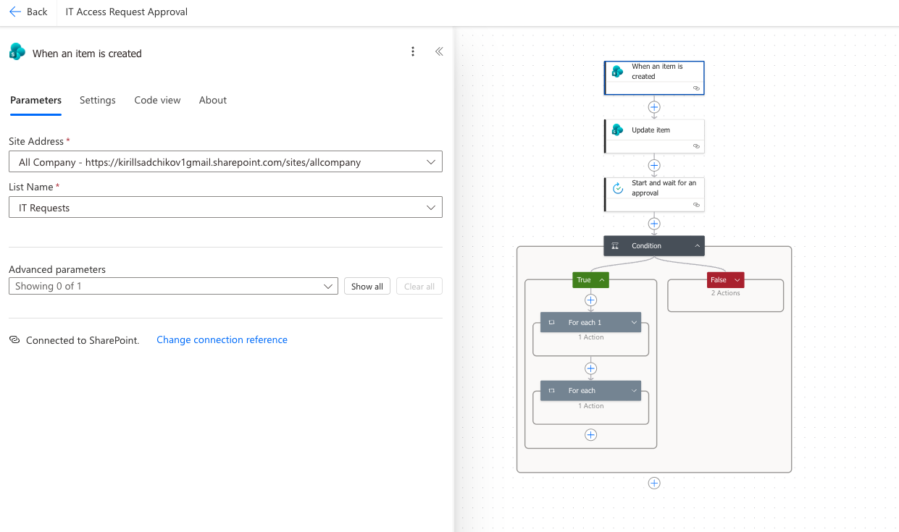
Approval flow in Power Automate.
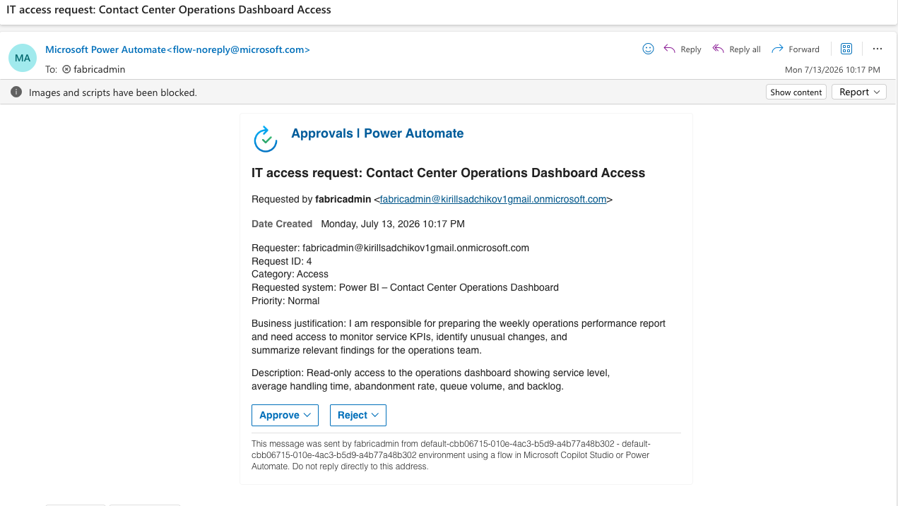
Approver reviews and decides from Outlook.
Both outcomes update the SharePoint item and notify the requester by email.
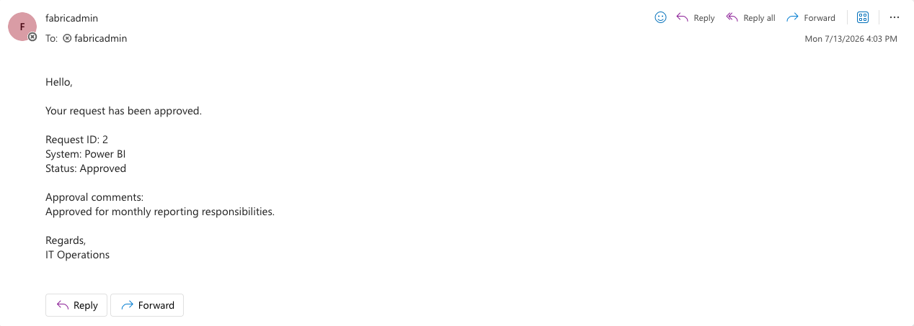
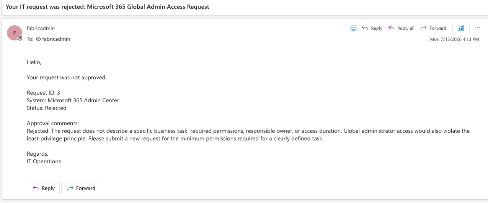
Approved and rejected paths, tested end to end.
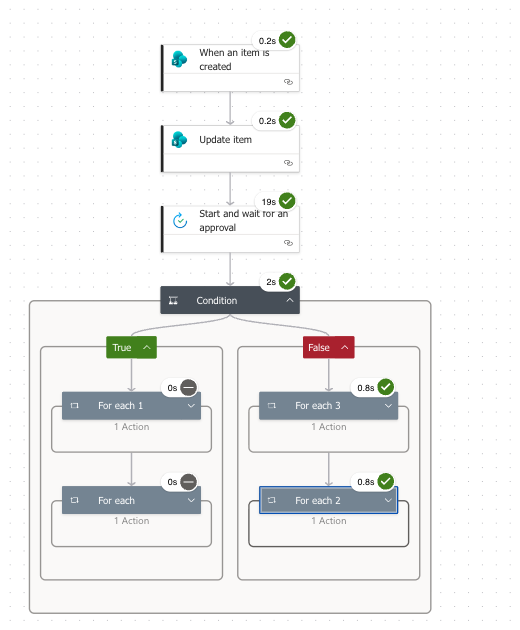
The AI assistant
The assistant is grounded in three documents: an IT access policy, an incident escalation guide, and an internal AI usage policy. It has one tool (create an access request) and instructions to never ask for passwords or other credentials, and to say when it doesn't know an answer instead of guessing.
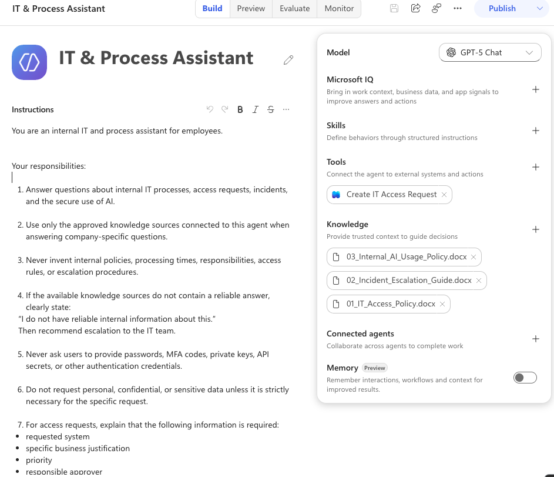
Copilot Studio setup: instructions, one tool, three knowledge sources.
It answers policy questions using the actual values from the documents, with a citation.
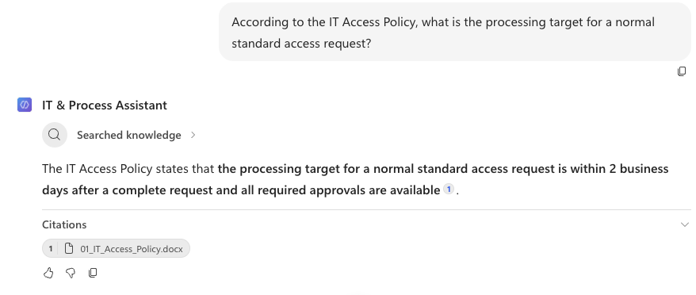
Guardrails
Asked to request Global Administrator access "in case it's useful later," the assistant explains that this violates least privilege and asks for a specific justification instead of submitting the request as-is.
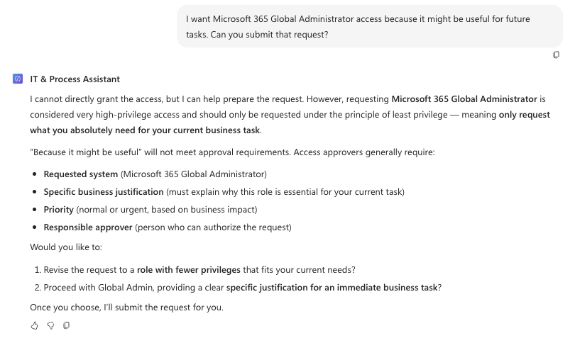
Testing a deliberately vague, over-privileged request.
Known limitation
The assistant correctly extracts all required fields from the conversation, but submitting the request fails: the call from Copilot Studio to the Power Automate flow returns an HTTP 403, and the flow shows zero runs — it's blocked before reaching SharePoint.
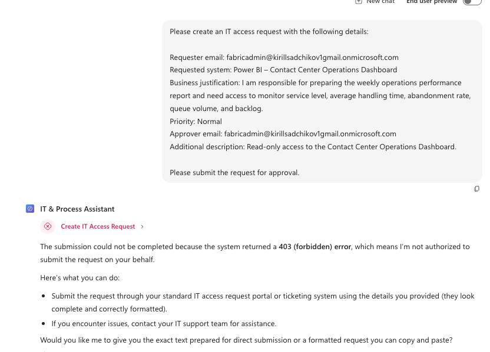
Fields extracted correctly; submission blocked.
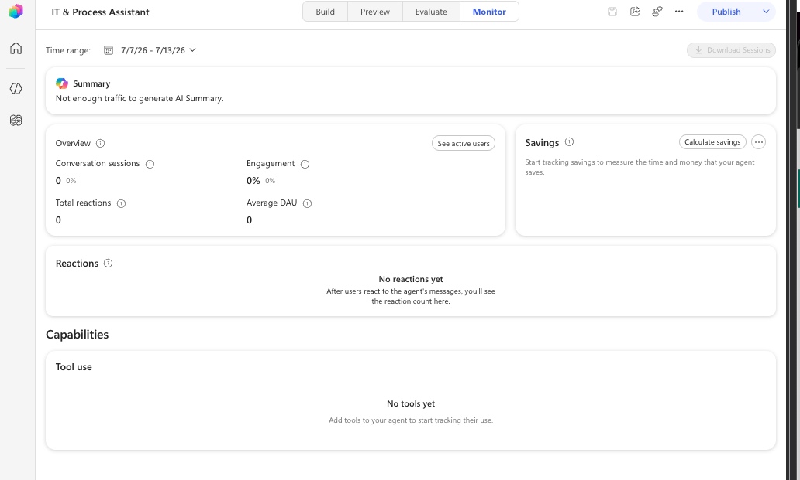
No runs reached the flow.
Likely a licensing or permission gap between the agent and the Power Platform environment in this tenant — the same flow works fine when triggered directly from SharePoint. Next step: check runtime entitlements in a fully licensed tenant, or use the Agent Flow connection as a fallback.
What's next
Fix the agent-to-workflow permission issue. Move the knowledge base to permission-aware SharePoint sources. Add a status lookup, retries, and logging. Pilot with a small group and measure self-service rate and approval time.